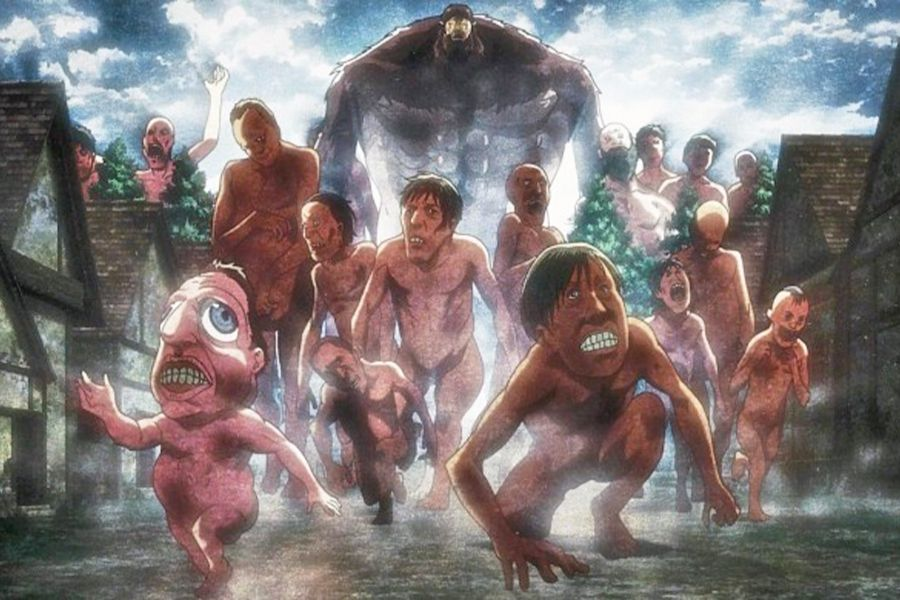
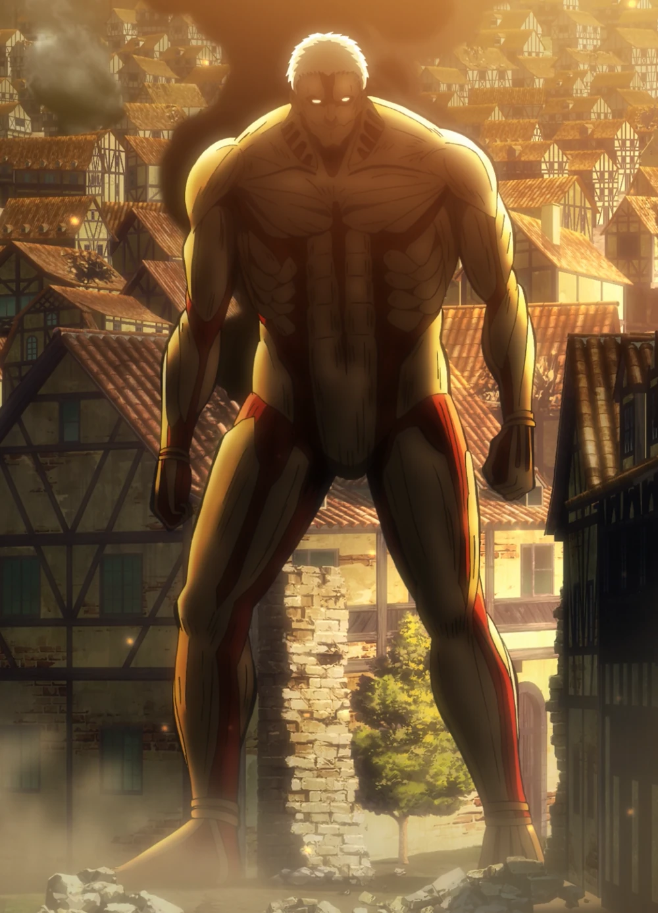
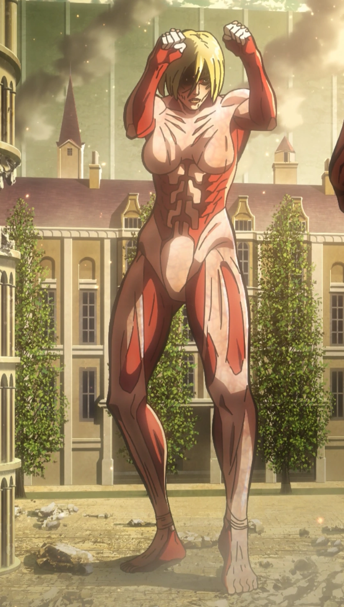
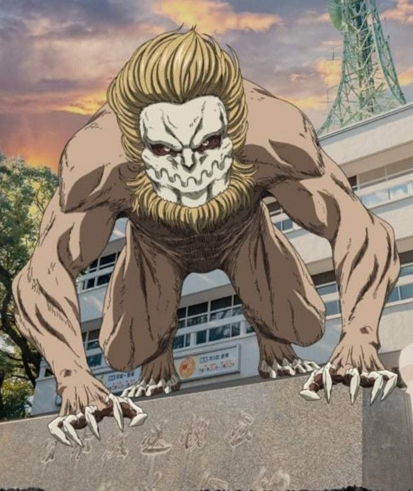
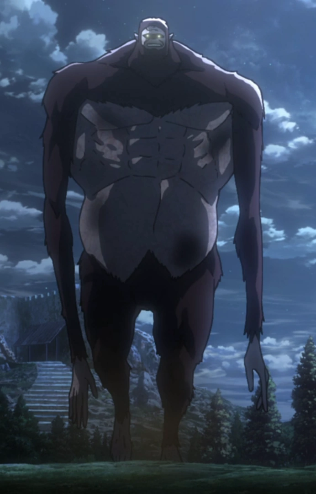
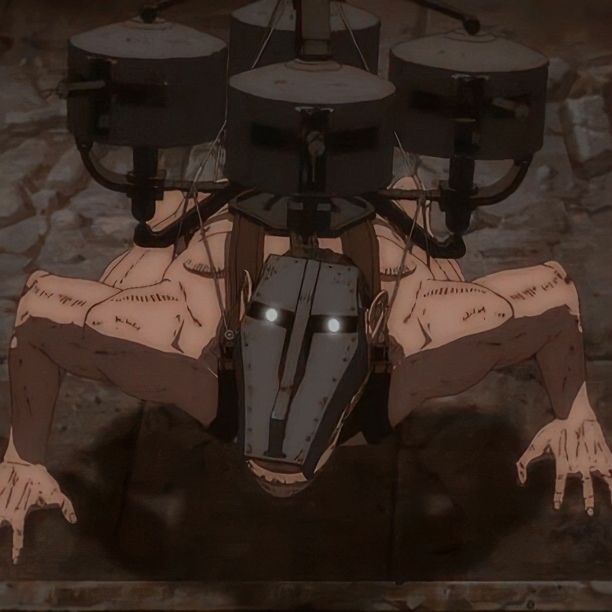
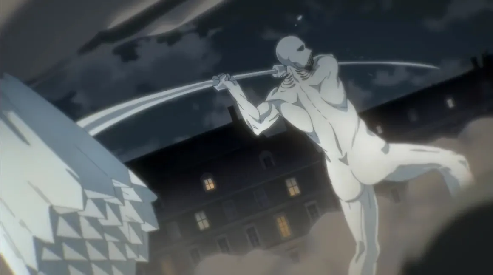
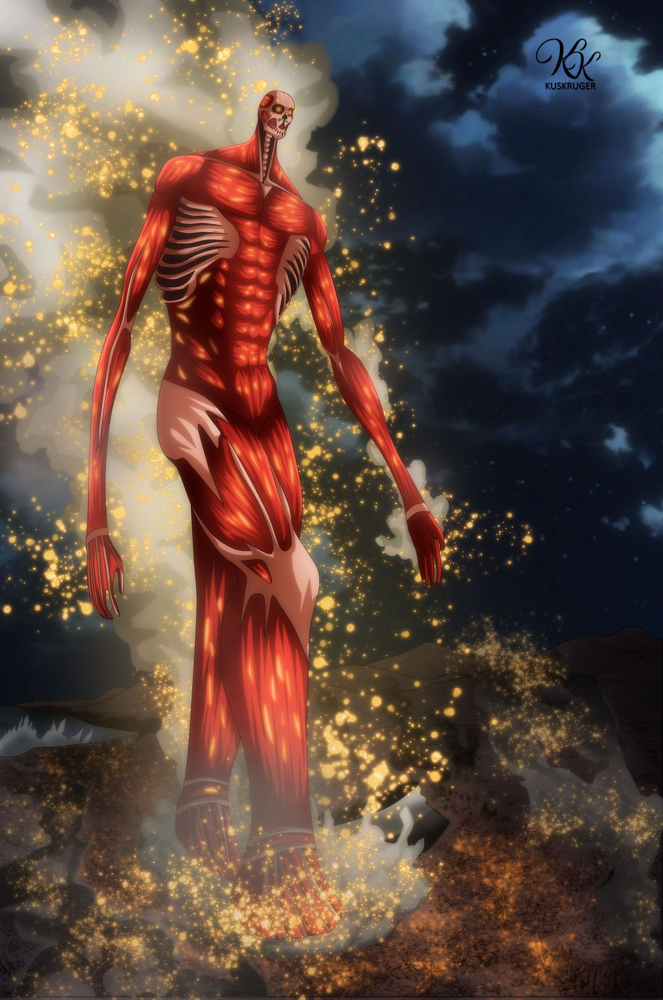
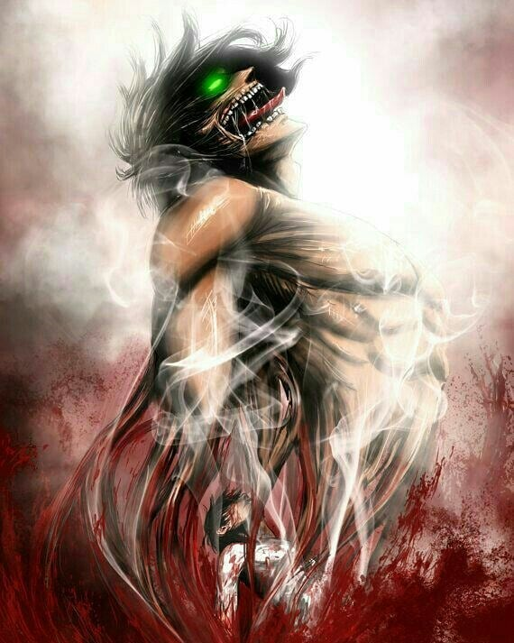
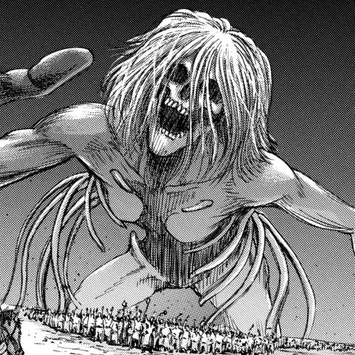

Habiendo ya hablado de algunos de los personajes más importantes. Ahora procederemos a dar un repaso acerca de la historia de esta increíble serie, que ha dado para hablar durante los últimos años.
Los titanes (巨人 Kyojin?, lit. Gigantes) fueron una raza de humanoides devoradores de humanos, quienes cumplían un papel fundamental para el desarrollo de los eventos de la serie. Estas criaturas son en realidad seres humanos pertenecientes a una raza conocida como la Gente de Ymir y que por lo general, han sido transformados a través de la inyección de un suero en el torrente sanguíneo.
Los titanes aparecieron hace aproximadamente 2000 años, luego de que Ymir Fritz fuese la primera persona en obtener el poder de los titanes. Durante 107 años, las personas que habitan las murallas en la isla Paradis creyeron que la humanidad entera sucumbió ante los titanes.
Hay dos clases principales de Titanes, que explicaremos a continuación:
Los titanes (巨人 Kyojin?) fueron en su momento los principales antagonistas de la serie, con cuerpos de complexión masculina, aunque hay excepciones de titanes que tienen cuerpos deformados dependiendo de su tamaño. Como cabezas grandes, brazos cortos, etc. Pueden alcanzar alturas que van de tres a quince metros, con algunas excepciones (de hasta 120 metros de altura). Pese a su gran tamaño y enorme fuerza, los cuerpos de los titanes son extrañamente ligeros. Siguen aumentando en número, y sin embargo su reproducción es un misterio, ya que no tienen órganos reproductores visibles. No tienen inteligencia demostrable aún después de la captura y pruebas que se realizaron a especímenes. Permanecen inactivos si no tienen la suficiente luz solar y no necesitan comer para sobrevivir. Los titanes no parecen tener un objetivo distinto de la matanza y el consumo de los seres humanos, lo cual hacen solo por instinto, pues no parecen estar interesados en atacar a otros animales. Tienen la piel dura y capacidad de regeneración, y solo pueden ser asesinados por causa de una profunda incisión en la parte posterior del cuello. Esta debilidad llevó al desarrollo de los equipos de maniobras tridimensionales, permitiendo a los humanos moverse rápidamente en un espacio de tridimensional para acceder al punto débil de los titanes. Las criaturas tienen una alta temperatura corporal. Como resultado, sus cuerpos emiten vapor cuando se regeneran, se descomponen o se encuentran bajo un intenso esfuerzo; el cuerpo del Titán Colosal emite vapor de agua constantemente. Con el tiempo, se revela que los titanes fueron seres humanos en el pasado, pertenecientes a una raza especial conocida como la «gente de Ymir». Estas personas serían convertidas en gigantes por el ejército de un país llamado Marley, cuya existencia era desconocida para los humanos de los muros.
Son seres humanos que poseen el poder de los titanes, que les permite transformarse en estas criaturas y obtener sus habilidades reteniendo su inteligencia, para convertirse en titán el usuario debe infligir dolor a sí mismo y tener un objetivo en mente, se ha confirmado que solo existen nueve titanes de este tipo, entre los que se encuentran:
Es el titán que destruyó la puerta interior de Shiganshina, permitiendo así a los titanes regulares irrumpir dentro del territorio de la muralla María. Es veloz y su cuerpo está cubierto de placas casi impenetrables, a excepción de algunos puntos débiles en sus articulaciones. Más tarde se revela que dicho titán es Reiner Braun. Posteriormente los humanos crearon las Lanzas Relámpago, armas que, al ser activadas, provocan una pequeña explosión lo suficientemente fuerte como para destruir parte de las placas que posee su cuerpo haciendo que rompa su capa endurecida permitiendo que la legión de reconocimiento pueda debilitarlo y que Eren acabe con él.
Un titán de quince metros de altura con estructura de cuerpo femenino que fue encontrado durante la expedición al muro María. Posee una obvia inteligencia, amplio conocimiento de combate cuerpo a cuerpo, la capacidad de regenerar o endurecer selectivamente partes de su cuerpo y de llamar a otros titanes solamente con su rugido. Liderando a muchos otros titanes desviados, ataca a las fuerzas de la expedición en busca de Eren e intenta secuestrarlo. Solo Levi, Mikasa y Armin tienen contacto directo con ella. Posteriormente, Armin es capaz de idear un plan para llevarla hacia una trampa y confirmar que su verdadera identidad es Annie Leonhart. Luego de ser derrotada por Eren y Mikasa, en un intento por escapar de la muralla Rose, ella queda encerrada en una especie de cristal muy resistente e imposible de romper para los habitantes de las murallas.
Es un titán de cinco metros de altura. Tiene una gran agilidad, que le permite manejar a pequeños grupos de titanes y posee una gran fuerza en la mandíbula, lo que le permite defenderse con mayor destreza de otros titanes. Se revela que su poseedora es Ymir. Al igual que en su forma humana, tiene el cabello negro, además de unas garras muy afiladas y grandes colmillos. Más tarde se sabe que Ymir fue sacrificada para pasar su poder de Titán Mandíbula a Porco Galliard, un «guerrero» de Marley. Al final del manga su portador es Falco, este mismo titan sufre cambios, permitiéndole ser el primer y último de los titanes en volar.
Es la forma titán de Zeke Jaeger. Mide diecisiete metros de altura y apareció por primera vez en el muro Rose. Con un cuerpo cubierto de pelo y una cara simiesca, su apariencia se asemeja más a la de un gran simio que la de los demás titanes. Además es muy inteligente, e incluso tiene la capacidad de hablar elocuentemente el lenguaje humano, usándolo para comandarlos, así como operar perfectamente bien en la noche, mientras que otros titanes pierden movilidad sin luz solar. También se sabe que posee un método hasta ahora desconocido para transformar seres humanos en titanes, los cuales pueden moverse de noche gracias a la luz de la luna. Manifiesta interés en el equipo de maniobras tridimensionales, pues delicadamente despoja a Mike de su equipo para que pueda estudiarlo antes de permitir a sus compañeros titanes devorar al soldado. El Titán Bestia también utiliza sus largos brazos simiescos para escalar fácilmente los muros, y puede lanzar grandes rocas con alta precisión. Puede endurecer su cuerpo como otros titanes cambiantes ya sea para atacar o defenderse, lo cual explica como pudo herir con facilidad al Titán Acorazado.
Es un titán de una estatura notoriamente baja que se mueve sobre sus cuatro extremidades, midiendo cuatro metros de altura cuando anda a cuatro patas. Su rostro se caracteriza principalmente por unos labios muy gruesos, una gran nariz y unos ojos y frente pequeños, el hocico es alargado, asemejándose aún más a una especie de equino. Como la gran mayoría de titanes, tiene un aspecto masculino. Su poder está en posesión de una guerrera llamada Pieck Finger. Pieck asistió a su líder, Zeke Jaeger, transportando rocas que este usó para eliminar a la mayor parte del Cuerpo de Exploración. Más adelante logra regresar a Marley junto a Zeke y Reiner, luego de que estos fueran derrotados en la batalla por el muro María. Es el titan con mayor resistencia y maniobrabilidad, como queda demostrado durante la batalla del cielo y la tierra.
El Titán Martillo de Guerra puede usar sus habilidades de endurecimiento para crear todo tipo de armas, primeramente un martillo gigante, una espada, picos que emergen desde la tierra, hasta una ballesta. Su principal diferencia es que el humano que posee este titán está cubierto por un material cristalino muy resistente (similar al que utilizó el Titán Hembra para proteger su forma humana) y de este se crea el cuerpo del titán, así como sus diferentes armas, una observación es que al cortar la línea que unía al humano cristalizado con el cuerpo del titán, este pierde total control sobre el. Actualmente sus poderes se encuentran en posesión de Eren luego de que este ingiriera la sangre de Lara Tybur luego de ser estrujada por el titán mandíbula.
Es el titán cambiante más grande que existe. Tuvo su primera aparición en el año 845, fuera del distrito de Shiganshina. Mide aproximadamente sesenta y cinco metros de altura y su aspecto físico se asemeja al de un ser humanoide sin piel y, por lo tanto, sus músculos están expuestos. Posee una masa física mucho mayor que cualquier otro titán conocido, por lo que fue capaz de derribar fácilmente la puerta en el distrito de Shiganshina y, por lo tanto, también es en parte responsable de la caída del muro María. También da muestras de tener inteligencia cuando aparece ante el distrito de Trost en el año 850 pues, tras derribar la puerta del distrito, destruye la artillería de cañón que se encontraba sobre el muro para que los titanes invasores encontrasen menos resistencia. Más tarde se reveló que el Titán Colosal es la transformación de Bertholdt Hoover y, más adelante, de Armin Arlert.
Es el titán dentro de Eren, no es el titán más fuerte ni rápido de todos, pero es uno de los mejores peleando. A pesar de ser el quinto de la clase después de Annie, Reiner y Bertholdt, se puede ver que a Eren lo hace más fuerte el impulso y la rabia (como se puede ver en el episodio 21 del anime, en el cual se nota que ya tiene más control sobre su titán). Su primera transformación fue cuando el Titán Colosal atacó el distrito de Trost. Es mucho más fornido que los titanes ordinarios, mientras que éstos tienden a ser gruesos de vientre, el titán tiene un cuerpo atlético y unos músculos muy marcados. Además, su rostro no parece tan humano como el de estos; sus facciones son mucho más monstruosas, con nariz afilada, ojos finos y dos hileras de dientes, lo cual hace recordar al rostro de un demonio. En la práctica, es mucho más fuerte que los titanes normales de su mismo tamaño, pudiendo matarlos muy fácilmente en combates individuales. Más adelante (después de que Eren muerda un frasco con la palabra «Blindado») este titán adquiere la habilidad de endurecer su cuerpo con un material tan duro como el diamante.
Este es el poder que ha portado la familia Reiss, o sea la familia real, con relación a Historia Reiss. El poder se pasó de generación en generación en secreto, siendo siempre el heredero un miembro de la familia Reiss. Es portado actualmente por Eren, dado a él por su padre Grisha, el cual lo consiguió venciendo y comiendo a Frieda, hermana mayor de Historia Reiss. El titán cuenta con la cualidad de someter a otros titanes bajo su control (La Coordenada), así como también posee la cualidad de reescribir la memoria de las personas dentro de la muralla, gracias a lo cual mantuvo bajo engaño a los habitantes de las muros, haciéndoles creer que la raza humana se había casi extinto por culpa de los titanes lo cual no es verdad.
